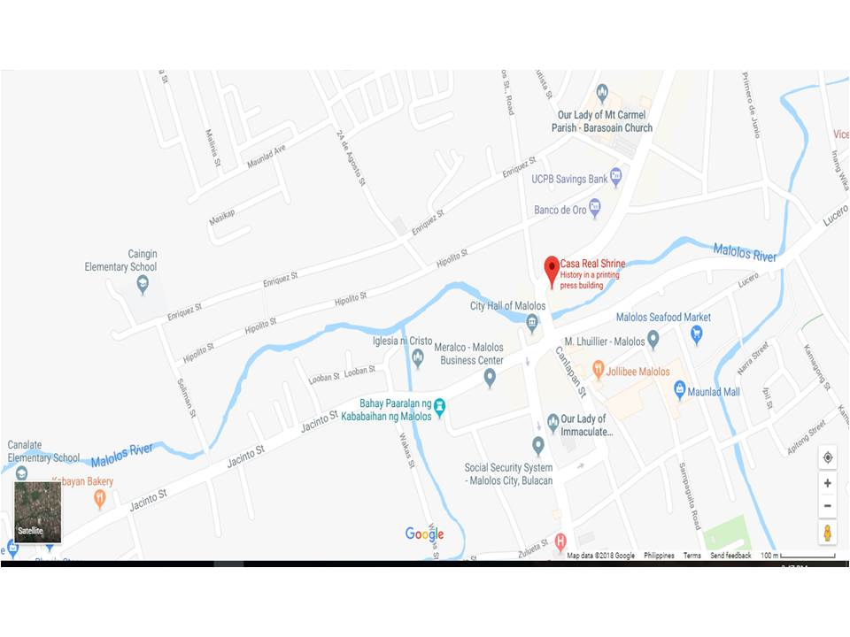

How to get there?


You need to ride a jeepney with a signboard, "Malolos Bayan" and alight near Malolos Cathedral. Walk across the bridge and you will see the Casa Real. If you're from Barasoain Church and the Jose Cojuanco Mansion, just few steps you can reach this old house. Actually in the whole area, it's not the only old house which you can see. There are several of them which can enjoy. From Malolos City, you can actually walk few meters to reach this place, from Bulacan Provincial Capital, you can take a jeep for 8 pesos.